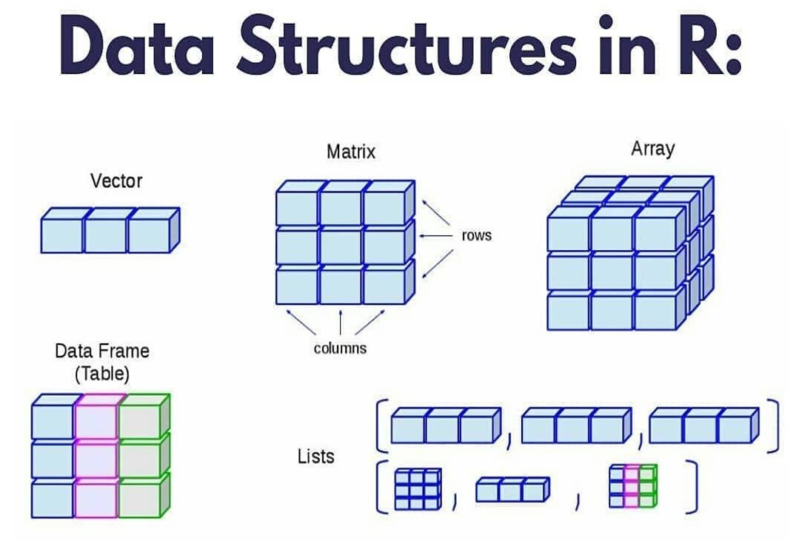
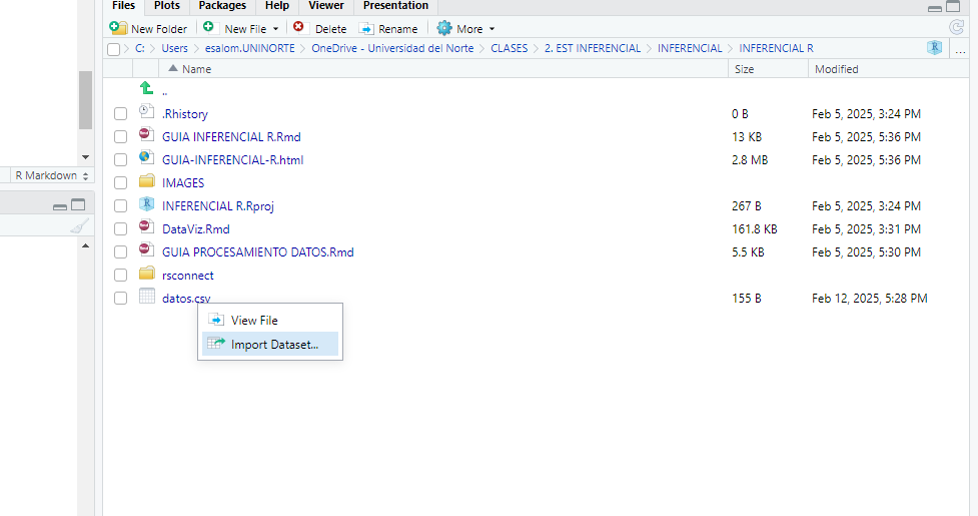

Lección 2 Bases de datos en R
Aquí encontraras las herramientas básicas para realizar un análisis exploratorio de Datos en Rstudio.El objetivo es conocer la información, qué primeras impresiones o tendencias mrevelan los datos.
2.1 Dataframes (bases de datos)
Un dataframe en Rstudio es una estructura de datos similar a una tabla o base de datos, donde las columnas representan variables y las filas representan observaciones.

2.1.1 Creación de Dataframes
Es posible crear un dataframe a partir de la unión de vectores con la función data.frame().
#Vectores o listas
nombre = c("Ana", "Luis", "Carlos", "Sofia")
edad = c(23, 25, 30, 22)
ciudad = c("Bogota", "Medellin", "Cali", "Barranquilla")
ingresos = c(2500000, 3000000, 2800000, 2700000)
# Crear un dataframe manualmente
df <- data.frame(nombre,edad,ciudad,ingresos)
# Ver el dataframe
df## nombre edad ciudad ingresos
## 1 Ana 23 Bogota 2500000
## 2 Luis 25 Medellin 3000000
## 3 Carlos 30 Cali 2800000
## 4 Sofia 22 Barranquilla 2700000Acceso a los Datos del dataframe
Para acceder a las columnas de un dataframe existen varias maneras
## [1] "Ana" "Luis" "Carlos" "Sofia"## nombre edad ciudad ingresos
## 2 Luis 25 Medellin 3e+06## [1] 30Modificación de Dataframes
Es posible agregar, modificar o eliminar columnas y filas en un dataframe
Agregar una nueva columna
## nombre edad ciudad ingresos puntaje
## 1 Ana 23 Bogota 2500000 85
## 2 Luis 25 Medellin 3000000 90
## 3 Carlos 30 Cali 2800000 78
## 4 Sofia 22 Barranquilla 2700000 88Modificar un valor
Eliminar una columna
## nombre edad ingresos puntaje
## 1 Ana 23 2600000 85
## 2 Luis 25 3000000 90
## 3 Carlos 30 2800000 78
## 4 Sofia 22 2700000 88Filtrado de Datos
También, es posible filtrar filas que cumplen ciertas condiciones:
## nombre edad ingresos puntaje
## 2 Luis 25 3e+06 90## nombre edad ingresos puntaje
## 1 Ana 23 2600000 85
## 2 Luis 25 3000000 90
## 4 Sofia 22 2700000 88Ordenamiento de Dataframes
## nombre edad ingresos puntaje
## 4 Sofia 22 2700000 88
## 1 Ana 23 2600000 85
## 2 Luis 25 3000000 90
## 3 Carlos 30 2800000 78Guardar Dataframes
Guardar un dataframe como un archivo CSV (Este es un formato muy común en el que se suelen encontrar las bases de datos):
2.1.2 Importar un Dataframe desde un archivo CSV
## nombre edad ingresos puntaje
## 1 Ana 23 2600000 85
## 2 Luis 25 3000000 90
## 3 Carlos 30 2800000 78
## 4 Sofia 22 2700000 88Otra forma para importar datos, es a través de la ventana de archivos

También es posible importar datos directamente desde donde esté guardada la base de datos en el equipo (cuando se utiliza la versión Rstudio de escritorio) La línea de código sería la siguiente:
2.2 Pre procesamiento de una Base de Datos Preinstalada en R
R incluye varias bases de datos preinstaladas. En este ejemplo, usaremos mtcars, una base de datos con información sobre automóviles.
## mpg cyl disp hp drat wt qsec vs am gear carb
## Mazda RX4 21.0 6 160 110 3.90 2.620 16.46 0 1 4 4
## Mazda RX4 Wag 21.0 6 160 110 3.90 2.875 17.02 0 1 4 4
## Datsun 710 22.8 4 108 93 3.85 2.320 18.61 1 1 4 1
## Hornet 4 Drive 21.4 6 258 110 3.08 3.215 19.44 1 0 3 1
## Hornet Sportabout 18.7 8 360 175 3.15 3.440 17.02 0 0 3 2
## Valiant 18.1 6 225 105 2.76 3.460 20.22 1 0 3 1Exploración de Datos
Para ver las dimensiones del dataframe o el tamaño de mi base de datos:
## [1] 32 11Ver los tipos de datos o variables
## 'data.frame': 32 obs. of 11 variables:
## $ mpg : num 21 21 22.8 21.4 18.7 18.1 14.3 24.4 22.8 19.2 ...
## $ cyl : num 6 6 4 6 8 6 8 4 4 6 ...
## $ disp: num 160 160 108 258 360 ...
## $ hp : num 110 110 93 110 175 105 245 62 95 123 ...
## $ drat: num 3.9 3.9 3.85 3.08 3.15 2.76 3.21 3.69 3.92 3.92 ...
## $ wt : num 2.62 2.88 2.32 3.21 3.44 ...
## $ qsec: num 16.5 17 18.6 19.4 17 ...
## $ vs : num 0 0 1 1 0 1 0 1 1 1 ...
## $ am : num 1 1 1 0 0 0 0 0 0 0 ...
## $ gear: num 4 4 4 3 3 3 3 4 4 4 ...
## $ carb: num 4 4 1 1 2 1 4 2 2 4 ...Hacer un resumen estadístico (muy general). Esta es la primera impresión de todas las variables
## mpg cyl disp hp drat wt qsec vs
## Min. :10.40 Min. :4.000 Min. : 71.1 Min. : 52.0 Min. :2.760 Min. :1.513 Min. :14.50 Min. :0.0000
## 1st Qu.:15.43 1st Qu.:4.000 1st Qu.:120.8 1st Qu.: 96.5 1st Qu.:3.080 1st Qu.:2.581 1st Qu.:16.89 1st Qu.:0.0000
## Median :19.20 Median :6.000 Median :196.3 Median :123.0 Median :3.695 Median :3.325 Median :17.71 Median :0.0000
## Mean :20.09 Mean :6.188 Mean :230.7 Mean :146.7 Mean :3.597 Mean :3.217 Mean :17.85 Mean :0.4375
## 3rd Qu.:22.80 3rd Qu.:8.000 3rd Qu.:326.0 3rd Qu.:180.0 3rd Qu.:3.920 3rd Qu.:3.610 3rd Qu.:18.90 3rd Qu.:1.0000
## Max. :33.90 Max. :8.000 Max. :472.0 Max. :335.0 Max. :4.930 Max. :5.424 Max. :22.90 Max. :1.0000
## am gear carb
## Min. :0.0000 Min. :3.000 Min. :1.000
## 1st Qu.:0.0000 1st Qu.:3.000 1st Qu.:2.000
## Median :0.0000 Median :4.000 Median :2.000
## Mean :0.4062 Mean :3.688 Mean :2.812
## 3rd Qu.:1.0000 3rd Qu.:4.000 3rd Qu.:4.000
## Max. :1.0000 Max. :5.000 Max. :8.000Verificación y Manejo de Datos Faltantes
Verificar:
## [1] 0Eliminar:
La solución a los datos faltantes NO SIEMPRE va a ser eliminarlos. Es muy importante dar el tratamiento correcto.
Eliminación de Columnas Innecesarias
Si algunas columnas no son relevantes para el análisis, es posible eliminarlas.
## mpg cyl disp hp drat wt qsec vs am gear carb
## Mazda RX4 21.0 6 160.0 110 3.90 2.620 16.46 0 1 4 4
## Mazda RX4 Wag 21.0 6 160.0 110 3.90 2.875 17.02 0 1 4 4
## Datsun 710 22.8 4 108.0 93 3.85 2.320 18.61 1 1 4 1
## Hornet 4 Drive 21.4 6 258.0 110 3.08 3.215 19.44 1 0 3 1
## Hornet Sportabout 18.7 8 360.0 175 3.15 3.440 17.02 0 0 3 2
## Valiant 18.1 6 225.0 105 2.76 3.460 20.22 1 0 3 1
## Duster 360 14.3 8 360.0 245 3.21 3.570 15.84 0 0 3 4
## Merc 240D 24.4 4 146.7 62 3.69 3.190 20.00 1 0 4 2
## Merc 230 22.8 4 140.8 95 3.92 3.150 22.90 1 0 4 2
## Merc 280 19.2 6 167.6 123 3.92 3.440 18.30 1 0 4 4
## Merc 280C 17.8 6 167.6 123 3.92 3.440 18.90 1 0 4 4
## Merc 450SE 16.4 8 275.8 180 3.07 4.070 17.40 0 0 3 3
## Merc 450SL 17.3 8 275.8 180 3.07 3.730 17.60 0 0 3 3
## Merc 450SLC 15.2 8 275.8 180 3.07 3.780 18.00 0 0 3 3
## Cadillac Fleetwood 10.4 8 472.0 205 2.93 5.250 17.98 0 0 3 4
## Lincoln Continental 10.4 8 460.0 215 3.00 5.424 17.82 0 0 3 4
## Chrysler Imperial 14.7 8 440.0 230 3.23 5.345 17.42 0 0 3 4
## Fiat 128 32.4 4 78.7 66 4.08 2.200 19.47 1 1 4 1
## Honda Civic 30.4 4 75.7 52 4.93 1.615 18.52 1 1 4 2
## Toyota Corolla 33.9 4 71.1 65 4.22 1.835 19.90 1 1 4 1
## Toyota Corona 21.5 4 120.1 97 3.70 2.465 20.01 1 0 3 1
## Dodge Challenger 15.5 8 318.0 150 2.76 3.520 16.87 0 0 3 2
## AMC Javelin 15.2 8 304.0 150 3.15 3.435 17.30 0 0 3 2
## Camaro Z28 13.3 8 350.0 245 3.73 3.840 15.41 0 0 3 4
## Pontiac Firebird 19.2 8 400.0 175 3.08 3.845 17.05 0 0 3 2
## Fiat X1-9 27.3 4 79.0 66 4.08 1.935 18.90 1 1 4 1
## Porsche 914-2 26.0 4 120.3 91 4.43 2.140 16.70 0 1 5 2
## Lotus Europa 30.4 4 95.1 113 3.77 1.513 16.90 1 1 5 2
## Ford Pantera L 15.8 8 351.0 264 4.22 3.170 14.50 0 1 5 4
## Ferrari Dino 19.7 6 145.0 175 3.62 2.770 15.50 0 1 5 6
## Maserati Bora 15.0 8 301.0 335 3.54 3.570 14.60 0 1 5 8
## Volvo 142E 21.4 4 121.0 109 4.11 2.780 18.60 1 1 4 2## mpg cyl disp hp drat wt qsec vs am gear
## Mazda RX4 21.0 6 160 110 3.90 2.620 16.46 0 1 4
## Mazda RX4 Wag 21.0 6 160 110 3.90 2.875 17.02 0 1 4
## Datsun 710 22.8 4 108 93 3.85 2.320 18.61 1 1 4
## Hornet 4 Drive 21.4 6 258 110 3.08 3.215 19.44 1 0 3
## Hornet Sportabout 18.7 8 360 175 3.15 3.440 17.02 0 0 3
## Valiant 18.1 6 225 105 2.76 3.460 20.22 1 0 3Filtrado de Datos
Se pueden filtrar observaciones basadas en condiciones específicas.
# Filtrar autos con más de 20 millas por galón (mpg)
df_filtrado <- subset(datos, mpg > 20)
df_filtrado## mpg cyl disp hp drat wt qsec vs am gear
## Mazda RX4 21.0 6 160.0 110 3.90 2.620 16.46 0 1 4
## Mazda RX4 Wag 21.0 6 160.0 110 3.90 2.875 17.02 0 1 4
## Datsun 710 22.8 4 108.0 93 3.85 2.320 18.61 1 1 4
## Hornet 4 Drive 21.4 6 258.0 110 3.08 3.215 19.44 1 0 3
## Merc 240D 24.4 4 146.7 62 3.69 3.190 20.00 1 0 4
## Merc 230 22.8 4 140.8 95 3.92 3.150 22.90 1 0 4
## Fiat 128 32.4 4 78.7 66 4.08 2.200 19.47 1 1 4
## Honda Civic 30.4 4 75.7 52 4.93 1.615 18.52 1 1 4
## Toyota Corolla 33.9 4 71.1 65 4.22 1.835 19.90 1 1 4
## Toyota Corona 21.5 4 120.1 97 3.70 2.465 20.01 1 0 3
## Fiat X1-9 27.3 4 79.0 66 4.08 1.935 18.90 1 1 4
## Porsche 914-2 26.0 4 120.3 91 4.43 2.140 16.70 0 1 5
## Lotus Europa 30.4 4 95.1 113 3.77 1.513 16.90 1 1 5
## Volvo 142E 21.4 4 121.0 109 4.11 2.780 18.60 1 1 4Transformación de Datos
Podemos agregar columnas nuevas basadas en cálculos.
# Crear una nueva columna con consumo en km por litro
datos$km_per_l <- datos$mpg * 0.425144
head(datos)## mpg cyl disp hp drat wt qsec vs am gear km_per_l
## Mazda RX4 21.0 6 160 110 3.90 2.620 16.46 0 1 4 8.928024
## Mazda RX4 Wag 21.0 6 160 110 3.90 2.875 17.02 0 1 4 8.928024
## Datsun 710 22.8 4 108 93 3.85 2.320 18.61 1 1 4 9.693283
## Hornet 4 Drive 21.4 6 258 110 3.08 3.215 19.44 1 0 3 9.098082
## Hornet Sportabout 18.7 8 360 175 3.15 3.440 17.02 0 0 3 7.950193
## Valiant 18.1 6 225 105 2.76 3.460 20.22 1 0 3 7.695106Cambio de Tipo de Variable
Podemos convertir una variable numérica en categórica.
## 'data.frame': 32 obs. of 11 variables:
## $ mpg : num 21 21 22.8 21.4 18.7 18.1 14.3 24.4 22.8 19.2 ...
## $ cyl : num 6 6 4 6 8 6 8 4 4 6 ...
## $ disp : num 160 160 108 258 360 ...
## $ hp : num 110 110 93 110 175 105 245 62 95 123 ...
## $ drat : num 3.9 3.9 3.85 3.08 3.15 2.76 3.21 3.69 3.92 3.92 ...
## $ wt : num 2.62 2.88 2.32 3.21 3.44 ...
## $ qsec : num 16.5 17 18.6 19.4 17 ...
## $ vs : num 0 0 1 1 0 1 0 1 1 1 ...
## $ am : num 1 1 1 0 0 0 0 0 0 0 ...
## $ gear : num 4 4 4 3 3 3 3 4 4 4 ...
## $ km_per_l: num 8.93 8.93 9.69 9.1 7.95 ...## 'data.frame': 32 obs. of 11 variables:
## $ mpg : num 21 21 22.8 21.4 18.7 18.1 14.3 24.4 22.8 19.2 ...
## $ cyl : Factor w/ 3 levels "4","6","8": 2 2 1 2 3 2 3 1 1 2 ...
## $ disp : num 160 160 108 258 360 ...
## $ hp : num 110 110 93 110 175 105 245 62 95 123 ...
## $ drat : num 3.9 3.9 3.85 3.08 3.15 2.76 3.21 3.69 3.92 3.92 ...
## $ wt : num 2.62 2.88 2.32 3.21 3.44 ...
## $ qsec : num 16.5 17 18.6 19.4 17 ...
## $ vs : num 0 0 1 1 0 1 0 1 1 1 ...
## $ am : num 1 1 1 0 0 0 0 0 0 0 ...
## $ gear : num 4 4 4 3 3 3 3 4 4 4 ...
## $ km_per_l: num 8.93 8.93 9.69 9.1 7.95 ...Ordenamiento de Datos
## mpg cyl disp hp drat wt qsec vs am gear km_per_l
## Honda Civic 30.4 4 75.7 52 4.93 1.615 18.52 1 1 4 12.92438
## Merc 240D 24.4 4 146.7 62 3.69 3.190 20.00 1 0 4 10.37351
## Toyota Corolla 33.9 4 71.1 65 4.22 1.835 19.90 1 1 4 14.41238
## Fiat 128 32.4 4 78.7 66 4.08 2.200 19.47 1 1 4 13.77467
## Fiat X1-9 27.3 4 79.0 66 4.08 1.935 18.90 1 1 4 11.60643
## Porsche 914-2 26.0 4 120.3 91 4.43 2.140 16.70 0 1 5 11.05374